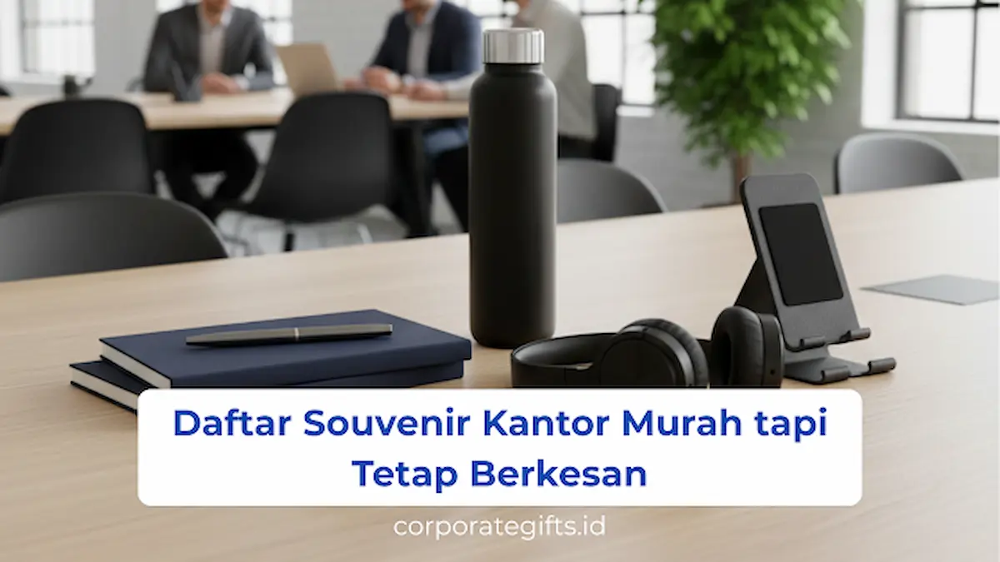

Corporate Gifts ID - Souvenir kantor murah adalah solusi strategis bagi manajemen perusahaan untuk memberikan apresiasi, bingkisan acara, maupun media promosi tanpa harus membebani anggaran belanja tahunan. Barang-barang fungsional seperti tote bag, tumbler plastik premium, pulpen metal, dan tali lanyard merupakan contoh cinderamata ekonomis yang ideal. Dengan pemilihan desain minimalis dan penyematan logo yang rapi, souvenir ini terbukti efektif memperkuat citra merek, memupuk loyalitas karyawan, serta meninggalkan impresi profesional pada agenda seminar, gathering, hingga onboarding staf baru.
Dalam dunia kerja modern, kebutuhan pengadaan souvenir kantor hemat terus meningkat. Menariknya, harga terjangkau tidak selalu identik dengan tampilan murahan. Banyak perusahaan cerdas memadukan souvenir ekonomis untuk pembagian massal dengan strategi gift set executive bagi relasi VIP, sehingga tercipta efisiensi procurement yang proporsional.
Poin Kunci Souvenir Kantor Murah & Berkesan:
- Prioritaskan Utilitas Harian: Barang yang dipakai setiap hari (tote bag, pulpen, notebook, tumbler) memberikan nilai guna tinggi meski anggarannya terjangkau.
- Estetika Minimalis & Packaging Rapi: Palet warna korporat netral dan kemasan rapi (pouch spunbond atau box kraft) secara instan mendongkrak perceived value cinderamata.
- Fleksibilitas Pengadaan B2B: Cocok didistribusikan untuk peserta seminar massal, workshop internal, hingga welcome kit karyawan baru dengan kisaran harga mulai Rp5.000 hingga Rp25.000.
Mengapa Souvenir Kantor Murah Tetap Menjadi Pilihan Utama?
Pengadaan cinderamata kantor dalam skala besar sering kali dihadapkan pada keterbatasan plafon anggaran divisi General Affairs maupun HRD. Souvenir ekonomis hadir sebagai jembatan yang menjawab kebutuhan tersebut dengan keunggulan berikut:
- Anggaran Lebih Terjangkau Tanpa Mengorbankan Fungsi: Souvenir ramah biaya sangat ideal untuk acara dengan ratusan hingga ribuan peserta, seperti pelatihan karyawan, rapat akbar tahunan, dan pameran dagang (expo).
- Fleksibilitas Penggunaan Acara: Mudah disesuaikan dengan aneka konsep acara, mulai dari tema kasual gathering keluarga hingga seminar formal instansi pemerintah.
- Media Branding yang Luas: Produk pakai harian memastikan logo instansi terus terpapar di ruang publik secara konsisten.
7 Rekomendasi Souvenir Kantor Murah yang Tetap Profesional
Berikut tujuh pilihan souvenir terpopuler yang telah teruji memberikan impresi positif tanpa menguras kas operasional perusahaan:
1. Tote Bag Spunbond atau Kanvas Blacu
Salah satu souvenir paling diminati karena mendukung gaya hidup ramah lingkungan. Berbobot ringan, berdaya tampung luas, dan bisa digunakan berulang kali untuk belanja harian. Area cetaknya yang luas sangat ideal untuk memperkenalkan logo dan tagline perusahaan.
2. Pulpen Metal Ekonomis dengan Laser Grafir
Berbeda dengan pulpen plastik murah yang mudah pecah, pulpen metal custom menghadirkan sensasi genggam yang mantap dan elegan. Grafir nama atau logo perusahaan memberikan sentuhan resmi yang sangat disukai staf kantor.
3. Notebook A5 / A6 Cover Kraft Minimalis
Buku catatan bersampul kertas daur ulang (kraft paper) atau soft cover polos memberikan nuansa estetik modern. Sangat praktis dibagikan pada sesi rapat kerja atau pembekalan orientasi karyawan baru.
4. Tumbler Plastik Premium Bebas BPA
Jika anggaran belum mencukupi untuk varian stainless steel vacuum, tumbler plastik premium berbahan polipropilena (PP) food-grade adalah alternatif cerdas. Tetap berpenampilan futuristik dan aman untuk air minum harian.
5. Tali Lanyard Custom Printing
Aksesori wajib bagi setiap karyawan untuk menggantung ID card atau kartu akses kantor. Tali lanyard dengan sablon sublimasi full color tampak cerah, rapi, dan tahan luntur bertahun-tahun.
6. Stiker Vinyl Die-Cut Tahan Air
Media cinderamata kecil yang sangat disukai generasi muda. Desain stiker bernuansa tipografi motivasi kerja atau maskot korporat kerap ditempelkan di punggung laptop, botol minum, maupun binder catatan.
7. Hand Sanitizer Pocket Spray Custom
Praktis, higienis, dan sangat relevan dalam era kesadaran kesehatan kerja. Wadah spray pipih seukuran kartu nama ini mudah diselipkan di saku celana dan memiliki ruang cetak stiker logo yang jelas.

Kustomisasi logo yang rapi dan kemasan berkelas mampu menaikkan nilai persepsi cinderamata kantor.
Tabel Rekomendasi Souvenir Kantor Murah Berdasarkan Budget
Rencanakan alokasi biaya pengadaan Anda dengan melihat rincian estimasi harga dan karakteristik produk pada tabel berikut:
| Pilihan Souvenir | Estimasi Biaya per Unit | Kelebihan Utama | Kesesuaian Acara |
|---|---|---|---|
| Tote Bag Spunbond Custom | Rp5.000 - Rp12.000 | Area cetak branding sangat luas | Goodie bag seminar, pameran publik |
| Tali Lanyard Printing + Holder | Rp8.000 - Rp15.000 | Dipakai harian di tempat kerja | Onboarding staf baru, event internal |
| Pulpen Metal Laser Grafir | Rp10.000 - Rp20.000 | Kesan eksekutif & tulisan awet | Workshop, rapat kerja, seminar kit |
| Notebook Kraft A5 Garis | Rp12.000 - Rp22.000 | Estetik, fungsional untuk catatan | Pelatihan karyawan, konferensi |
| Tumbler Plastik BPA-Free | Rp15.000 - Rp25.000 | Higienis, mendukung gaya hidup sehat | Gathering kantor, perayaan ulang tahun |
Tips Memilih Souvenir Kantor Murah Tanpa Terlihat Murahan
Ada perbedaan mendasar antara barang hemat yang berkelas dengan barang murah yang tampak ringkih. Simak panduan tim desainer kami agar souvenir Anda tetap menuai pujian:
- Fokus pada Nilai Guna: Hindari aksesoris pajangan yang tidak memiliki fungsi praktis. Barang fungsional yang dipakai setiap hari selalu memiliki nilai persepsi yang lebih tinggi.
- Terapkan Desain Grafis Minimalis: Hindari mencetak logo terlalu besar yang memenuhi seluruh bodi produk. Logo berukuran proporsional dengan palet warna netral (monokrom, abu-abu, navy) memberikan kesan mahal dan elegan.
- Sentuhan Kemasan yang Rapi: Bungkus souvenir menggunakan kantong kain serut atau kotak karton cokelat berstempel logo. Kemasan pembungkus yang rapi seketika melipatgandakan kepuasan saat unboxing.
Manfaat Strategis Souvenir Hemat bagi Perusahaan
Menjalankan pengadaan souvenir ekonomis secara terencana memberikan keuntungan berlipat ganda bagi korporasi:
- Efisiensi Anggaran Tahunan: Dana promosi dapat dialokasikan secara fleksibel ke pos pengembangan bisnis lainnya tanpa mengorbankan agenda relasi publik.
- Memperkuat Soliditas Tim Internal: Cinderamata yang dibagikan secara merata saat momen kebersamaan memicu rasa bangga dan kepemilikan (sense of belonging) pada institusi tempat bekerja.
- Kampanye Merek yang Berkelanjutan: Barang promosi yang beredar di tangan masyarakat menjadi duta branding bergerak yang bekerja selama berbulan-bulan tanpa biaya iklan berulang.
Kesimpulan
Souvenir kantor berbiaya murah merupakan strategi cerdas untuk mempertahankan hubungan baik dengan audiens dan karyawan di tengah dinamika efisiensi anggaran. Dengan menitikberatkan pada aspek fungsionalitas, kontrol mutu bahan baku, dan pengemasan yang apik, perusahaan Anda tetap dapat menampilkan citra bonafide dan penuh kehangatan.
Hubungi tim konsultan CorporateGifts.ID hari ini untuk mendapatkan kurasi paket seminar kit hemat, sampel fisik produk, dan penawaran harga terbaik untuk pengadaan kantor Anda.